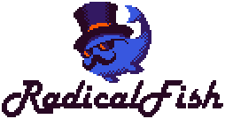

Description
CrossCode is a single-player action role-playing game.
The game is set within CrossWorlds, a fictional MMORPG environment where players control avatars while exploring large regions, completing quests, and fighting enemies. The player takes on the role of Lea, a young woman who enters CrossWorlds without her memories and with limited ability to speak. As she explores the in-game world, she undertakes missions for guilds and NPCs, searches for fragments of her past, and gradually unravels the mystery of her existence.
Gameplay combines fast-paced action combat with puzzle-solving and exploration. Players control Lea from a top-down perspective, using melee and ranged attacks against enemies in real-time. Ranged combat involves aiming projectile orbs that can ricochet off surfaces, while melee attacks provide close-range options. Dodging, guarding, and exploiting elemental weaknesses are essential for survival, especially during boss encounters. Enemies drop loot and experience points, which contribute to progression and new abilities.
Character growth is managed through a skill grid system, where points earned from leveling up can be invested in different combat branches such as melee, ranged, defense, and special techniques. Lea also unlocks elemental modes like fire, ice, wave, and shock, which expand combat strategies and are often required to solve environmental puzzles. Equipment can be acquired from shops, quests, or crafting, allowing players to customize stats such as health, attack power, and resistances.
Puzzle-solving is a central part of exploration. Many dungeons require using the ricochet mechanic to hit switches or activate mechanisms, often under time constraints. These challenges increase in complexity as new elemental powers are introduced. Platforming-like sequences involve timing jumps across gaps, navigating obstacles, and combining movement with puzzle elements.
Outside of combat and dungeons, the game includes an extensive side-quest system provided by NPCs across towns and hubs. Quests range from fetch objectives to combat challenges, often granting unique rewards or gear. Guilds allow players to participate in optional storylines and further expand Lea’s interactions within CrossWorlds.
Screenshots
hi
hi
hi
Download
Reviews
"CrossCode is a wonderfully told, and downright fun to play game. Fans of Secret of Mana and similar RPGs will find themselves right at home. CrossCode is full of charm, and with the accessibility sliders available, there is no excuse for not getting your paws on this game and enjoying everything this polished title has to offer. And did we mention it’s coded completely in HTML5? CrossCool!"
- Brian Para (Cat with Monocle)
"I can understand why it is regarded so highly in terms of indie RPGs. The puzzles are most definitely on par with even the Zelda franchise, and you can tell that a lot of love and care went into it. CrossCode is a love letter to Action-RPGs and I can honestly say that it deserves all the accolades it has received."
- Alex Aplin (Phenixx Gaming)
"Radical Fish Games has taken eight years to craft one of the best indie titles of the year. With an interesting story, great combat, exciting and rewarding exploration CrossCode not only pays homage to some of the best retro action-RPGs it also proves that a small studio with love and passion for their project can rival the million-dollar blockbusters we've grown so used to. Trust me, you won't want to miss out on this future classic."
- Garri Bagdasarov (Playstation Universe)
Publishing Info
Publishers
Deck13 Interactive
DANGEN Entertainment
Developers
Radical Fish Games